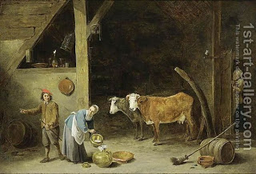

Bava Metzia 5 - No Oath in the Case of "Here, it is Yours?"
Question against Rav Sheshet from the following ruling:
"Four types of custodians take an oath if they partially admit their fault, and they are: the unpaid custodian, the borrower, the paid custodian, and the renter." What does the custodian admit? That the article is intact in his possession. But that is exactly the case of "here, it is yours," which contradicts Rav Sheshet, who says that no oath is required! And Rav Sheshet? He will tell you that in this case the custodian borrowed three cows, all of them died, and he admits to being negligent regarding one, so it is not the case of "here, it is yours."
Test yourself